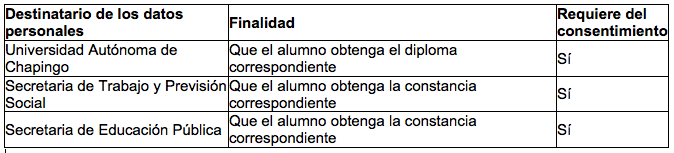

Pizza Al Pastor
Productos Naturales El Encino, S.A. y su Colegio Encino de Educación Universitaria en Modelos Alternativos (C.E.E.U.M.A.), con domicilio en calle Colorines No. 58, Colonia Jardines de Atizapán, Atizapán de Zaragoza, Estado de México, C.P. 52978, es el responsable del uso y protección de sus datos personales, y al respecto le informamos lo siguiente:
¿Para qué fines utilizaremos sus datos personales?
Los datos personales que recabamos de usted, los utilizaremos para las siguientes finalidades que son necesarias para el servicio que solicita:- Para las gestiones de facturación.
- Realizar trámites de inscripción a las diferentes ofertas de capacitación.
- Para la administración de nuestros servicios escolares, incluyendo pago de colegiaturas, facturación electrónica, emisión de constancias y documentos requeridos por alumnos y clientes.
- Para la elaboración de identificaciones de acceso a las instalaciones y/o de descuentos para la compra de productos.
- Evaluar la calidad del producto y/o servicio que recibió.
- Proveer información sobre los productos y servicios que ofrece esta empresa.
- Realizar estudios sobre hábitos de consumo y de mercado
- Mercadotecnia o publicidad
- Prospección comercial.
Manifestándolo vía correo electrónico a ceeumaventas@yahoo.com.mx La negativa para el uso de sus datos personales para estas finalidades no podrá ser un motivo para que le neguemos los servicios y productos que solicita o contrata con nosotros.
¿Qué datos personales utilizaremos para estos fines?
Para llevar a cabo las finalidades descritas en el presente aviso de privacidad, utilizaremos los siguientes datos personales:- Datos de identificación.
- Datos de contacto.
- Datos sobre características físicas.
- Datos laborales.
- Datos académicos.
¿Con quién compartimos su información personal y para qué fines?
Le informamos que sus datos personales son compartidos dentro del país con las siguientes personas, empresas, organizaciones o autoridades distintas a nosotros, para los siguientes fines:

Con relación a las transferencias que requieren su consentimiento, si usted después de leer este aviso de privacidad no manifiesta su negativa para que las mismas se lleven a cabo, entenderemos que nos lo ha otorgado.
Ponemos a su disposición el siguiente mecanismo para que, en su caso, nos pueda comunicar su negativa para que dichas transferencias se realicen:
Cuando esté por concluir el diplomado y/o taller que este usted cursando, se le invitará a llenar una solicitud en la que usted manifieste su decisión de obtener la constancia de su elección a fin de acreditar los estudios que se encuentre próximo a concluir, misma en la que por escrito quedará asentada su autorización para la transferencia de sus datos personales, en el entendido que de no autorizar dicha transferencia no será posible gestionar su trámite ante las instancias correspondientes.
¿Cómo puede acceder, rectificar o cancelar sus datos personales, u oponerse a su uso?
Usted tiene derecho a conocer qué datos personales tenemos de usted, para qué los utilizamos y las condiciones del uso que les damos (Acceso).Asimismo, es su derecho solicitar la corrección de su información personal en caso de que esté desactualizada, sea inexacta o incompleta (Rectificación); que la eliminemos de nuestros registros o bases de datos cuando considere que la misma no está siendo utilizada adecuadamente (Cancelación); así como oponerse al uso de sus datos personales para fines específicos (Oposición).
Estos derechos se conocen como derechos ARCO. Para el ejercicio de cualquiera de los derechos ARCO, usted deberá presentar la solicitud respectiva a través del siguiente medio:
Con un correo electrónico a ceeumaventas@yahoo.com.mx en el que se detalle el derecho a ejercer, mismo que tendrá respuesta de acuerdo a lo establecido en la Ley Federal de Protección de Datos Personales en Posesión de Particulares.
Para conocer el procedimiento y requisitos para el ejercicio de los derechos ARCO, ponemos a su disposición el siguiente medio:
Sitio web ceeuma.com o bien llamando al teléfono 58 24 41 36 Los datos de contacto de la persona o departamento de datos personales, que está a cargo de dar trámite a las solicitudes de derechos ARCO, son los siguientes:
- Nombre de la persona o departamento de datos personales: Rosa María Robles Martínez, Subdirectora General.
- Domicilio: Colorines No. 58, Jardines de Atizapán, Atizapán de Zaragoza, Estado de México, C.P. 52978
- Correo electrónico: ceeumaventas@yahoo.com.mx
- Número telefónico: 58 24 41 36
Sin embargo, es importante que tenga en cuenta que no en todos los casos podremos atender su solicitud o concluir el uso de forma inmediata, ya que es posible que por alguna obligación legal requiramos seguir tratando sus datos personales.
Asimismo, usted deberá considerar que para ciertos fines, la revocación de su consentimiento implicará que no le podamos seguir prestando el servicio que nos solicitó, o la conclusión de su relación con nosotros. Para revocar su consentimiento deberá presentar su solicitud a través del siguiente medio:
Con correo electrónico a ceeumaventas@yahoo.com.mx, en el que se manifieste su interés en revocar su consentimiento, mismo que tendrá respuesta de acuerdo a lo establecido en la Ley Federal de Protección de Datos Personales en Posesión de Particulares.
Para conocer el procedimiento y requisitos para la revocación del consentimiento, ponemos a su disposición el siguiente medio:
Sitio web ceeuma.com o bien llamando al teléfono 58 24 41 36
¿Cómo puede limitar el uso o divulgación de su información personal?
Con objeto de que usted pueda limitar el uso y divulgación de su información personal, le ofrecemos los siguientes medios:Con correo electrónico a ceeumaventas@yahoo.com.mx, en el que se manifieste su interés en revocar su consentimiento, mismo que tendrá respuesta de acuerdo a lo establecido en la Ley Federal de Protección de Datos Personales en Posesión de Particulares.
¿Cómo puede conocer los cambios en este aviso de privacidad?
El presente aviso de privacidad puede sufrir modificaciones, cambios o actualizaciones derivadas de nuevos requerimientos legales; de nuestras propias necesidades por los productos o servicios que ofrecemos; de nuestras prácticas de privacidad; de cambios en nuestro modelo de negocio, o por otras causas.Nos comprometemo a mantenerlo informado sobre los cambios que pueda sufrir el presente aviso de privacidad, a través de nuestro sitio web ceeuma.com
Colorines #58 Jardines de Atizapan, Atizapan de Zaragoza Edo. De Méx. Tel: 55-58244236, 58257390.